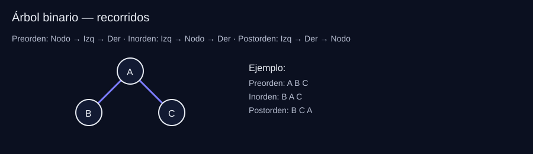
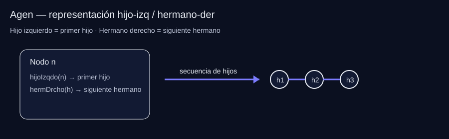
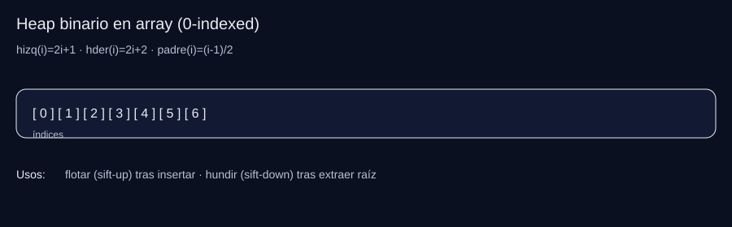
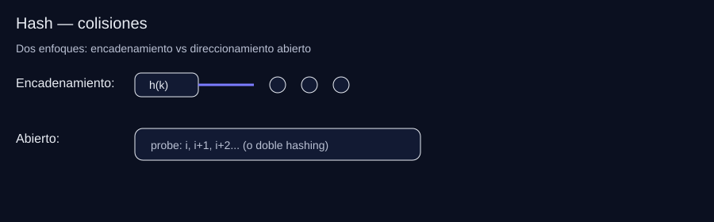
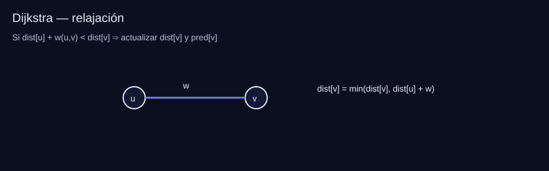

Guía de Estudio EDNL - Examen Final
Formato del examen: Teoría + código C++ usando TADs (Abin, Agen, Abb, GrafoP) y ejercicios resueltos tipo examen con esqueletos de código y razonamiento.
ÍNDICE
- Árboles: Teoría
- Árboles: Implementación y Código
- Árboles: Ejercicios Tipo Examen
- Tablas Hash: Teoría
- Grafos: Teoría
- Grafos: Implementación y Código
- Grafos: Ejercicios Tipo Examen
- Estrategia para el Examen
1. ÁRBOLES: TEORÍA
1.1 Definición y Componentes
Árbol: Conjunto de elementos (nodos) donde cada nodo tiene un padre (excepto la raíz) y cero o más hijos. Sin ciclos.
Definición formal:
- Si n es un nodo y A1, A2, ..., Ak son árboles con raíces n1, n2, ..., nk
- n es padre de n1, n2, ..., nk (estos son hijos, entre sí son hermanos)
Componentes:
| Concepto | Definición |
|-----------|------------|
| Raíz | Único nodo sin ancestro |
| Hoja | Nodo sin descendientes propios (no tiene hijos) |
| Grado | Nº de hijos de un nodo. Grado del árbol = máximo grado de sus nodos |
| Camino | Sucesión de nodos n1, n2, ..., nk donde ni es padre de ni+1 |
| Longitud | Nº de aristas en un camino = k-1 |
| Ancestros | Nodos en el camino desde la raíz hasta un nodo |
| Descendientes | Nodos que tienen a n como ancestro |
| Altura | Longitud de la rama más larga desde un nodo hasta una hoja. Altura del árbol = altura de la raíz |
| Profundidad | Longitud del camino único desde la raíz hasta el nodo (también: nivel) |
| Subárbol | Conjunto formado por un nodo y todos sus descendientes |
| Rama | Camino que termina en una hoja |
1.2 Árbol Binario (TAD Abin)
Árbol donde cada nodo tiene 0, 1 o 2 hijos (grado ≤ 2).
Especificación del TAD Abin:
template <typename T> class Abin {
public:
Abin(); // Crea árbol vacío
void insertarRaiz(const T& e); // Inserta raíz (árbol vacío)
void insertarHijoIzqdo(nodo n, const T& e); // Inserta hijo izquierdo
void insertarHijoDrcho(nodo n, const T& e); // Inserta hijo derecho
void eliminarHijoIzqdo(nodo n); // Elimina hijo izquierdo (debe ser hoja)
void eliminarHijoDrcho(nodo n); // Elimina hijo derecho (debe ser hoja)
bool arbolVacio() const; // ¿Está vacío?
const T& elemento(nodo n) const; // Devuelve elemento del nodo
nodo raiz() const; // Devuelve nodo raíz (o NODO_NULO)
nodo padre(nodo n) const; // Devuelve padre de n
nodo hijoIzqdo(nodo n) const; // Devuelve hijo izquierdo
nodo hijoDrcho(nodo n) const; // Devuelve hijo derecho
static const nodo NODO_NULO; // Representa "nodo inexistente"
private:
// Una de las siguientes implementaciones...
};
Recorridos de un AB: | Recorrido | Orden | Uso típico | |-----------|-------|-------------| | Preorden | Nodo → Izq → Der | Copiar árbol, prefijos | | Inorden | Izq → Nodo → Der | ABB → claves ordenadas | | Postorden | Izq → Der → Nodo | Eliminar árbol, sufijos | | Por niveles (BFS) | Nivel 0, 1, 2... | Distancia a raíz, árboles completos |

1.3 Árbol General (TAD Agen)
Árbol donde cada nodo puede tener cualquier número de hijos.
Diferencia clave vs binario: No hay hijo derecho/izquierdo, sino hijo izquierdo y hermano derecho.
template <typename T> class Agen {
public:
Agen();
void insertarHijoIzqdo(nodo n, const T& e); // Primer hijo (o nuevo primer hijo)
void insertarHermDrcho(nodo n, const T& e); // Hermano derecho de n
nodo hijoIzqdo(nodo n) const; // Primer hijo
nodo hermDrcho(nodo n) const; // Siguiente hermano
// ... resto similar a Abin
};
Truco: Representar árbol general como binario (hijo-hermano): - Hijo izquierdo = primer hijo - Hijo derecho = siguiente hermano

1.4 ABB (Árbol Binario de Búsqueda)
Invariante: Para cada nodo n:
- Claves en subárbol izquierdo < elemento(n)
- Claves en subárbol derecho > elemento(n)
- No hay valores repetidos (estricto)
Complejidad: - Mejor caso (equilibrado): O(log n) - Peor caso (degenerado en lista): O(n)
Operaciones típicas:
- buscar(e): devuelve subárbol cuya raíz contiene e
- insertar(e): inserta manteniendo invariante
- eliminar(e): 3 casos (hoja / 1 hijo / 2 hijos)
Ínfimo/Supremo: - Ínfimo(x): mayor clave ≤ x - Supremo(x): menor clave ≥ x
1.5 Árboles Equilibrados (AVL y ARN)
AVL: ABB + para cada nodo: |h(izq) - h(der)| ≤ 1
Rotaciones AVL: LL, RR, LR, RL (re-equilibran tras inserción/eliminación)
ARN (Rojo-Negro): ABB coloreado (rojo/negro) con propiedades de equilibrio. - Garantiza altura O(log n) - Menos rotaciones que AVL en inserción/eliminación
Comparación: | Criterio | AVL | ARN | |----------|-----|-----| | Equilibrio | Más estricto (deseq ≤ 1) | Más flexible | | Búsqueda | Más rápida (árbol más equilibrado) | Ligeramente más lenta | | Inserción/Eliminación | Más rotaciones | Menos rotaciones |
1.6 Árboles Parcialmente Ordenados (APO / Heap)
Propiedad: Cada nodo ≤ (min-heap) o ≥ (max-heap) que sus hijos.
Operaciones:
- insertar(e): colocar al final + flotar (sift-up)
- extraerMin/Max(): sacar raíz, subir último a raíz + hundir (sift-down)
- consultarMin/Max(): O(1)
Implementación típica: Vector (como heap binario completo): - Hijo izquierdo de i: 2i+1 (si 0-indexed) - Hijo derecho de i: 2i+2

2. ÁRBOLES: CÓDIGO
2.1 Implementación Enlazada de Abin
template <typename T> class Abin {
public:
typedef celda* nodo; // O usar índices según diseño
// ...
private:
struct celda {
T elto;
nodo padre, hizq, hder;
celda(const T& e, nodo p = NODO_NULO)
: elto(e), padre(p), hizq(NODO_NULO), hder(NODO_NULO) {}
};
nodo r; // raíz
static const nodo NODO_NULO = nullptr; // o índice especial
};
Cálculo de altura:
template <typename T>
int alturaAbin_rec(typename Abin<T>::nodo n, const Abin<T>& A) {
if (n == Abin<T>::NODO_NULO) return -1; // convenio: altura nodo nulo = -1
return 1 + std::max(
alturaAbin_rec(A.hijoIzqdo(n), A),
alturaAbin_rec(A.hijoDrcho(n), A)
);
}
Cálculo de número de nodos:
template <typename T>
size_t contarNodos(const Abin<T>& A) {
if (A.arbolVacio()) return 0;
return contarNodos_rec(A.raiz(), A);
}
template <typename T>
size_t contarNodos_rec(typename Abin<T>::nodo n, const Abin<T>& A) {
if (n == Abin<T>::NODO_NULO) return 0;
return 1
+ contarNodos_rec(A.hijoIzqdo(n), A)
+ contarNodos_rec(A.hijoDrcho(n), A);
}
2.2 Inserción y Eliminación en ABB
Buscar en ABB:
template <typename T>
const Abb<T>& Abb<T>::buscar(const T& e) const {
if (r == nullptr) return *this; // árbol vacío
else if (e < r->elto) return r->izq.buscar(e); // subárbol izquierdo
else if (r->elto < e) return r->der.buscar(e); // subárbol derecho
else return *this; // encontrado
}
Eliminación (3 casos):
// Caso 1: Hoja → eliminar directamente
// Caso 2: Un hijo → sustituir por ese hijo
// Caso 3: Dos hijos → sustituir por ínfimo del der o sup del izq
2.3 Ejercicio Típico: Árbol Binario Reflejado
Enunciado: Dado un árbol binario, crear otro intercambiando los subárboles.
Idea clave: reflejar = intercambiar sistemáticamente hijo izquierdo ↔ hijo derecho en cada nodo.
Paso a paso (receta):
1. Crear árbol B vacío.
2. Si A está vacío → devolver B.
3. Copiar la raíz de A en la raíz de B.
4. DFS recursivo: para cada nodo a en A y su “espejo” b en B:
- Si existe hijoDrcho(a) → insertarlo como hijoIzqdo(b).
- Si existe hijoIzqdo(a) → insertarlo como hijoDrcho(b).
- Repetir con los pares de hijos correspondientes.
Caso borde: árbol vacío → resultado vacío.
Ver solución (C++)
template <typename T>
Abin<T> AbinReflejado(const Abin<T>& A) {
Abin<T> Reflejado;
if (!A.arbolVacio()) {
Reflejado.insertarRaiz(A.elemento(A.raiz()));
AbinReflejado_rec(A.raiz(), Reflejado.raiz(), A, Reflejado);
}
return Reflejado;
}
template <typename T>
void AbinReflejado_rec(typename Abin<T>::nodo a,
typename Abin<T>::nodo b,
const Abin<T>& A,
Abin<T>& B) {
if (a != Abin<T>::NODO_NULO) {
// Insertar hijo izquierdo de B = hijo derecho de A
if (A.hijoDrcho(a) != Abin<T>::NODO_NULO)
B.insertarHijoIzqdo(b, A.elemento(A.hijoDrcho(a)));
AbinReflejado_rec(A.hijoDrcho(a), B.hijoIzqdo(b), A, B);
// Insertar hijo derecho de B = hijo izquierdo de A
if (A.hijoIzqdo(a) != Abin<T>::NODO_NULO)
B.insertarHijoDrcho(b, A.elemento(A.hijoIzqdo(a)));
AbinReflejado_rec(A.hijoIzqdo(a), B.hijoDrcho(b), A, B);
}
}
Complejidad: O(n) (visitas cada nodo una vez). Espacio: O(h) por la recursión.
Ojo: no llames a elemento() con NODO_NULO. Primero comprueba si el hijo existe.
2.4 Comprobar si un Árbol es AVL
Qué hay que demostrar: que en cada nodo se cumple |h(izq) - h(der)| ≤ 1 y que los dos subárboles también son AVL.
Intuición: si recalculas altura desde cero en cada nodo te sale O(n²). En examen, la solución “limpia” es devolver (AVL?, altura) en un solo recorrido.
Plantilla (pasos): 1. Caso base: nodo nulo → (true, -1) (convenio típico). 2. Resolver recursivamente izquierda y derecha. 3. Altura = 1 + max(hIzq, hDer). 4. AVL? = izqOK && derOK && |hIzq-hDer| ≤ 1.
Caso borde: define el convenio de altura (muy típico: altura(nulo) = -1, altura(hoja)=0).
Ver solución (C++)
template <typename T>
bool esAVL(const Abin<T>& A) {
return esAVL_rec(A.raiz(), A).first; // .first = ¿es AVL?
}
template <typename T>
std::pair<bool, int> esAVL_rec(typename Abin<T>::nodo n, const Abin<T>& A) {
if (n == Abin<T>::NODO_NULO)
return {true, -1}; // Nodo nulo: equilibrado, altura -1
auto [izqOK, hIzq] = esAVL_rec(A.hijoIzqdo(n), A);
auto [derOK, hDer] = esAVL_rec(A.hijoDrcho(n), A);
int altura = 1 + std::max(hIzq, hDer);
bool equilibrado = izqOK && derOK && std::abs(hIzq - hDer) <= 1;
return {equilibrado, altura};
}
Complejidad: O(n). Espacio: O(h) por recursión.
Errores típicos: (1) mezclar convenios de altura, (2) recalcular alturas con una función aparte dentro de la recursión (te vas a O(n²)).
3. EJERCICIOS ÁRBOLES (Tipo Examen)
3.1 Árbol Binario Reflejado ✅ (Visto arriba)
3.2 Árbol General Reflejado
template <typename T>
Agen<T> AgenReflejado(const Agen<T>& A) {
Agen<T> Reflejado;
if (!A.arbolVacio()) {
Reflejado.insertarRaiz(A.elemento(A.raiz()));
AgenReflejado_rec(A.raiz(), Reflejado.raiz(), A, Reflejado);
}
return Reflejado;
}
// Lógica: intercambiar primer hijo ↔ hermano derecho recursivamente
3.3 Árboles Generales Similares
Enunciado: Determinar si dos árboles generales tienen la misma estructura (mismo número de hijos en cada nodo, misma forma).
template <typename T>
bool similares(const Agen<T>& A, const Agen<T>& B) {
return similares_rec(A.raiz(), A, B.raiz(), B);
}
// Caso base: ambos nulos → true; uno nulo otro no → false
// Comparar recursivamente: primer hijo A vs primer hijo B (y sus hermanos)
3.4 Contar Nodos "Verdes" (o con cierta propiedad)
// Ejemplo: contar nodos que cumplen predicado P
template <typename T>
size_t contarNodosVerdes(typename Abin<T>::nodo n, const Abin<T>& A) {
if (n == Abin<T>::NODO_NULO) return 0;
size_t cuenta = (esVerde(A.elemento(n))) ? 1 : 0;
return cuenta
+ contarNodosVerdes(A.hijoIzqdo(n), A)
+ contarNodosVerdes(A.hijoDrcho(n), A);
}
3.5 Flotar/Hundir Nodos (heap operations)
Qué es: operaciones básicas de un heap binario tras insertar (flotar) o tras extraer la raíz (hundir).
Idea clave: en un heap en array, solo puede violarse la propiedad en el camino desde el nodo insertado hacia la raíz (flotar) o desde la raíz hacia abajo (hundir).
Plantilla (pasos):
- Flotar: mientras i > 0 y heap[i] “mejor” que su padre → intercambiar y subir.
- Hundir: mientras exista hijo → intercambiar con el mejor hijo (min hijo para min-heap).
Caso borde: en
hundir, comprueba siempre si existe hijo derecho antes de compararlo.
Ver solución (C++)
// Flotar (usado tras inserción en heap)
template <typename T>
void flotar(vector<T>& heap, size_t i) {
while (i > 0) {
size_t padre = (i - 1) / 2;
if (heap[i] >= heap[padre]) break; // min-heap
swap(heap[i], heap[padre]);
i = padre;
}
}
// Hundir (usado tras extraer mínimo)
template <typename T>
void hundir(vector<T>& heap, size_t i) {
size_t n = heap.size();
while (2*i + 1 < n) {
size_t hijo = 2*i + 1;
if (hijo + 1 < n && heap[hijo + 1] < heap[hijo]) hijo++;
if (heap[i] <= heap[hijo]) break;
swap(heap[i], heap[hijo]);
i = hijo;
}
}
Complejidad: O(log n) en ambos casos. Espacio: O(1).
Errores típicos: (1) olvidar actualizar i, (2) elegir mal el hijo en min-heap, (3) no controlar límites del array.
3.6 Subárbol Izquierdo Menor que Derecho
// Verificar si para todo nodo: suma(subárbol izquierdo) < suma(subárbol derecho)
template <typename T>
bool subarbolIzqMenorDer(const Abin<T>& A) {
return subarbolIzqMenorDer_rec(A.raiz(), A).first;
}
// Retornar {cumple, suma} para cada subárbol
3.7 Agenda ABB (Eliminar y reinsertar)
// Construir ABB de contactos (clave = nombre, dato = teléfono)
// Buscar, insertar, eliminar con criterio ABB
4. TABLAS HASH: TEORÍA
4.1 Conceptos Básicos
Tabla Hash: Estructura para asociar clave → posición mediante función hash h(clave).
Función hash ideal: Uniforme (distribuye claves uniformemente), rápida de calcular.
Factor de carga: α = n/m (n = elementos, m = tamaño tabla) - α alto → más colisiones → peor rendimiento - Umbral típico para rehashing: α ≈ 0.7-0.8
4.2 Resolución de Colisiones

| Método | Idea | Ventajas | Inconvenientes |
|---|---|---|---|
| Hashing cerrado | Todos los elementos en el array. Sondeo (lineal, cuadrático, doble hash) | Sin punteros extra | Borrado complejo (tumbas), agrupación |
| Hashing abierto | Cada posición apunta a lista (encadenamiento) | Borrado sencillo | Overhead de punteros |
| Encadenamiento mezclado | Híbrido | Balance | Más complejo |
4.3 Rehashing
Cuando α supera umbral: 1. Crear tabla mayor (típicamente 2×) 2. Reinsertar todas las claves (recalcular hash) 3. Coste amortizado: O(1)
4.4 Hash vs Árboles de Búsqueda
| Criterio | Hash (esperado) | ABB equilibrado |
|---|---|---|
| Búsqueda | O(1) | O(log n) |
| Inserción | O(1) | O(log n) |
| Orden | No mantiene orden | Sí (inorden) |
| Dependencia | Calidad del hash | Equilibrio del árbol |
5. GRAFOS: TEORÍA
5.1 Definición y Tipos
Grafo G = (V, A): - V: conjunto de vértices (nodos) - A: conjunto de aristas/arcos (pares de vértices)
Tipos: - No dirigido: (v, w) = (w, v) - Dirigido: (v, w) ≠ (w, v) (arco) - Ponderado: cada arista tiene un peso (coste, distancia, tiempo)
5.2 Representaciones
| Representación | Espacio | Comprobar arista (v,w) | Iterar vecinos |
|---|---|---|---|
| Matriz adyacencia | O(V²) | O(1) | O(V) |
| Lista adyacencia | O(V+E) | O(grado(v)) | O(grado(v)) |
Cuándo usar cuál: - Grafo denso (muchas aristas): matriz - Grafo disperso (pocas aristas): lista
5.3 Definiciones Importantes
- Grado (no dirigido): nº aristas incidentes al vértice
- Grado entrada/salida (dirigido): aristas que llegan / salen
- Camino: sucesión de vértices n1, n2, ..., nk donde (ni, ni+1) ∈ A
- Longitud: nº de aristas = k-1
- Grafo conexo: hay camino entre cualquier par de vértices
- Grafo completo: hay arista entre cada par de vértices
- Subgrafo: G' = (V', A') donde A' ⊆ A y V' son vértices de esas aristas
5.4 Recorridos de Grafos
BFS (Anchura): - Usa cola - Calcula distancias mínimas (en nº de aristas) en grafos no ponderados - Produce árbol de expansión por niveles
DFS (Profundidad): - Usa pila o recursión - Explorar componentes, detectar ciclos, orden topológico (DAG)
5.5 Caminos de Coste Mínimo
Dijkstra: - ✅ Requiere: pesos no negativos - ✅ Calcula: caminos mínimos desde un origen a todos los vértices - Con cola prioridad: O((V+E) log V) - ❌ NO usar con pesos negativos
Floyd: - Calcula: caminos mínimos entre TODOS los pares - Programación dinámica: O(V³) tiempo, O(V²) espacio - Versión booleana: Warshall (clausura transitiva / alcanzabilidad)
5.6 Árboles Generadores Mínimos (MST)
Kruskal: 1. Ordenar aristas por peso creciente 2. Añadir arista si no crea ciclo (usar Union-Find) 3. Repetir hasta tener V-1 aristas
Prim: 1. Crecer árbol desde un vértice 2. Añadir arista mínima que conecte árbol con vértice nuevo 3. Con heap: O(E log V)
Union-Find (TAD Partición):
- make-set, find, union
- Con compresión de caminos + unión por rango: casi O(1) amortizado
6. GRAFOS: CÓDIGO
6.1 TAD GrafoP (Grafo Ponderado)
template <typename tCoste>
class GrafoP {
public:
typedef size_t vertice;
GrafoP(size_t n, const tCoste& c = INFINITO);
size_t numVert() const { return ady.size(); }
const vector<tCoste>& operator[](vertice v) const { return ady[v]; }
static const tCoste INFINITO;
private:
vector<vector<tCoste>> ady; // matriz de costes
};
6.2 Dijkstra

template <typename tCoste>
vector<tCoste> Dijkstra(const GrafoP<tCoste>& G,
typename GrafoP<tCoste>::vertice origen,
vector<typename GrafoP<tCoste>::vertice>& P) {
typedef typename GrafoP<tCoste>::vertice vertice;
const size_t n = G.numVert();
vector<tCoste> D(n, INFINITO); // distancias mínimas
P = vector<vertice>(n, origen); // vértice anterior
vector<bool> S(n, false); // conjunto de vértices finalizados
D[origen] = 0;
for (size_t i = 0; i < n; i++) {
// Seleccionar vértice w no en S con D mínimo
vertice w = 0;
tCoste costeMinimo = INFINITO;
for (vertice v = 0; v < n; v++)
if (!S[v] && D[v] < costeMinimo) {
costeMinimo = D[v];
w = v;
}
S[w] = true;
// Recalcular D a través de w
for (vertice v = 0; v < n; v++) {
tCoste Owv = suma(D[w], G[w][v]);
if (Owv < D[v]) {
D[v] = Owv;
P[v] = w;
}
}
}
return D;
}
template <typename tCoste>
tCoste suma(tCoste x, tCoste y) {
if (x == INFINITO || y == INFINITO) return INFINITO;
return x + y;
}
6.3 Floyd
template <typename tCoste>
matriz<tCoste> Floyd(const GrafoP<tCoste>& G,
matriz<typename GrafoP<tCoste>::vertice>& P) {
typedef typename GrafoP<tCoste>::vertice vertice;
const size_t n = G.numVert();
matriz<tCoste> A(n); // matriz de costes mínimos
// Inicializar con costes del grafo
for (vertice i = 0; i < n; i++) {
A[i] = G[i];
A[i][i] = 0; // coste a sí mismo = 0
P[i] = vector<vertice>(n, i); // vértice intermedio inicial
}
// DP: camino mínimo pasando por k
for (vertice k = 0; k < n; k++)
for (vertice i = 0; i < n; i++)
for (vertice j = 0; j < n; j++) {
tCoste ikj = suma(A[i][k], A[k][j]);
if (ikj < A[i][j]) {
A[i][j] = ikj;
P[i][j] = k; // pasa por k
}
}
return A;
}
6.4 Warshall (Clausura Transitiva)
matriz<bool> Warshall(const Grafo& G) {
const size_t n = G.numVert();
matriz<bool> A(n);
// Inicializar: hay camino si hay arista directa
for (size_t i = 0; i < n; i++) {
for (size_t j = 0; j < n; j++)
A[i][j] = (i == j) || (G[i][j] != INFINITO);
}
// Clausura transitiva: camino pasando por k
for (size_t k = 0; k < n; k++)
for (size_t i = 0; i < n; i++)
for (size_t j = 0; j < n; j++)
A[i][j] = A[i][j] || (A[i][k] && A[k][j]);
return A;
}
6.5 TAD Partición (Union-Find) para Kruskal
class Particion {
public:
Particion(int n) : padre(n, -1) {} // cada elemento es su propio representante
void unir(int a, int b) {
// Unir subconjuntos de a y b (por altura)
int raizA = encontrar(a), raizB = encontrar(b);
if (raizA == raizB) return;
if (padre[raizA] > padre[raizB]) swap(raizA, raizB); // raizA más alta
if (padre[raizA] == padre[raizB]) padre[raizA]--; // mismo tamaño → crece altura
padre[raizB] = raizA; // raizB cuelga de raizA
}
int encontrar(int x) const {
int raiz = x;
while (padre[raiz] >= 0) raiz = padre[raiz]; // buscar raíz
// Compresión de caminos
while (x != raiz) {
int y = padre[x];
padre[x] = raiz;
x = y;
}
return raiz;
}
private:
mutable vector<int> padre; // padre[i] < 0 → es raíz (valor = -altura)
};
6.6 Kruskal
// Estructura para aristas
struct Arista {
size_t orig, dest;
size_t peso;
};
GrafoP<size_t> Kruskal(const GrafoP<size_t>& G) {
const size_t n = G.numVert();
GrafoP<size_t> MST(n); // árbol generador (inicialmente sin aristas)
Particion P(n);
// Recopilar y ordenar aristas por peso
vector<Arista> aristas;
for (size_t i = 0; i < n; i++)
for (size_t j = i+1; j < n; j++) // grafo no dirigido
if (G[i][j] != INFINITO)
aristas.push_back({i, j, G[i][j]});
sort(aristas.begin(), aristas.end(),
[](const Arista& a, const Arista& b) { return a.peso < b.peso; });
size_t aristasMST = 0;
for (const auto& a : aristas) {
if (aristasMST >= n-1) break;
int raizOrig = P.encontrar(a.orig);
int raizDest = P.encontrar(a.dest);
if (raizOrig != raizDest) { // no crea ciclo
MST[a.orig][a.dest] = MST[a.dest][a.orig] = a.peso;
P.unir(raizOrig, raizDest);
aristasMST++;
}
}
return MST;
}
6.7 Prim
GrafoP<size_t> Prim(const GrafoP<size_t>& G) {
const size_t n = G.numVert();
GrafoP<size_t> MST(n);
vector<bool> enMST(n, false);
vector<size_t> coste(n, INFINITO);
vector<size_t> padre(n, n); // padre en MST
coste[0] = 0; // empezar desde vértice 0
for (size_t i = 0; i < n; i++) {
// Seleccionar vértice fuera del MST con coste mínimo
size_t v = 0;
size_t minCoste = INFINITO;
for (size_t u = 0; u < n; u++)
if (!enMST[u] && coste[u] < minCoste) {
minCoste = coste[u];
v = u;
}
enMST[v] = true;
if (padre[v] != n) // no es la raíz
MST[v][padre[v]] = MST[padre[v]][v] = G[v][padre[v]];
// Actualizar costes a través de v
for (size_t u = 0; u < n; u++)
if (!enMST[u] && G[v][u] < coste[u]) {
coste[u] = G[v][u];
padre[u] = v;
}
}
return MST;
}
7. EJERCICIOS GRAFOS (Tipo Examen)
7.1 Ciudades Rebeldes (Zuelandia)
Enunciado: Calcular matriz de costes mínimos para viajar entre ciudades de Zuelandia donde: - a) Carreteras de un solo sentido (grafo dirigido) - b) Ciudades rebeldes inaccesibles (no pueden usarse) - c) Carreteras cortadas (no pueden usarse) - d) Todos los viajes deben pasar por la capital
Solución: Usar Floyd modificado + obligar paso por capital.
Cómo pensarlo (modo profe):
1. Modela el grafo dirigido con pesos (carreteras).
2. Aplica restricciones antes de buscar mínimos:
- Ciudad rebelde c: anula toda entrada a c (y si tu enunciado lo pide, también salidas).
- Carretera cortada (u,v): pon su coste a INFINITO.
3. Si todo debe pasar por la capital, entonces el coste i→j se transforma en:
- coste(i,j) = coste(i,Capital) + coste(Capital,j)
4. Calcula distancias desde capital y hacia capital (en grafo inverso) con Dijkstra, o usa Floyd si el enunciado lo pide explícito.
Ojo: si hay aristas con pesos negativos, Dijkstra no aplica. En los ejercicios típicos de EDNL, los costes suelen ser no negativos.
Ver solución (C++)
typedef std::pair<size_t, size_t> Carretera;
typedef matriz<size_t> CostesViajes;
CostesViajes ZuelandiaRebeldes(const GrafoP<size_t>& G,
const vector<size_t>& CiudadesRebeldes,
const vector<Carretera>& CarreterasRebeldes,
size_t Capital) {
// Copia del grafo original
GrafoP<size_t> Gmod = G;
// Marcar ciudades rebeldes como inaccesibles
for (size_t ciudad : CiudadesRebeldes)
for (size_t i = 0; i < G.numVert(); i++)
Gmod[i][ciudad] = GrafoP<size_t>::INFINITO;
// Marcar carreteras rebeldes como cortadas
for (const Carretera& c : CarreterasRebeldes)
Gmod[c.first][c.second] = GrafoP<size_t>::INFINITO;
// Obtener caminos mínimos desde y hacia la capital
vector<size_t> VerticesD(G.numVert()), VerticesDI(G.numVert());
vector<size_t> D = Dijkstra(Gmod, Capital, VerticesD);
vector<size_t> DI = DijkstraInv(Gmod, Capital, VerticesDI); // Dijkstra "hacia atrás"
// Construir matriz obligando a pasar por la capital
CostesViajes Resultado(G.numVert(), GrafoP<size_t>::INFINITO);
for (size_t i = 0; i < G.numVert(); i++)
for (size_t j = 0; j < G.numVert(); j++)
if (i != j && D[i] != INFINITO && DI[j] != INFINITO)
Resultado[i][j] = suma(D[i], DI[j]); // i → Capital → j
return Resultado;
}
Complejidad: dos Dijkstra: depende de implementación; con matriz O(V^2) cada uno. Espacio: O(V^2) para la matriz resultado.
Errores típicos: (1) olvidar anular carreteras cortadas, (2) no distinguir “hacia capital” (grafo inverso) de “desde capital”, (3) sumar INFINITO sin control (usa suma() segura).
7.2 Puentes Grecoland
Enunciado: Reconstruir archipiélago (islas Fobos/Deimos) con N1 y N2 ciudades respectivamente, comunicando todas las ciudades al mínimo coste. Considerar: - Coste proporcional a distancia euclídea de carreteras - Puentes siempre más caros que carreteras - Algunas ciudades son costeras (pueden tener puente)
Enfoque: Calcular todas las distancias (carreteras intra-isla + puentes inter-isla), luego aplicar Kruskal o Prim para obtener MST que conecte todas las ciudades.
// Paso 1: Calcular todas las aristas posibles (carreteras + puentes)
// Paso 2: Aplicar Kruskal, pero garantizar que se incluyan puentes solo si
// son necesarios para conectar las dos islas
7.3 Toxicidad Zuelandia / Líneas Aéreas Tumbuctú / Repartidor Bebidas
Patrón común: Problemas de grafos con: - Ciudades = vértices - Conexiones = aristas ponderadas - Objetivo = camino mínimo o MST
Plantilla mental: 1. Modelar: vértices, aristas, pesos 2. ¿Objetivo? (alcanzabilidad → BFS/DFS, camino mínimo → Dijkstra/Floyd, MST → Kruskal/Prim) 3. Elegir representación (matriz vs lista) 4. Justificar complejidad en el examen
7.4 Laberinto 3D / Matriz Fauno / Viajes Alergias
Tipos de problemas: - Laberinto: BFS para encontrar camino más corto (nº pasos) - Matriz: Floyd para all-pairs shortest paths - Viajes con restricciones: Dijkstra modificado o Floyd con condiciones adicionales
8. ESTRATEGIA PARA EL EXAMEN
8.1 Para Ejercicios de Árboles
- Identificar el TAD: ¿Es Abin, Agen, Abb, o APO?
- Elegir recorrido: ¿Qué información necesitas? (todos los nodos → pre/in/post, niveles → BFS)
- Caso base: Siempre
if (n == NODO_NULO) return valor_neutro; - Combinar resultados: ¿Suma, cuenta, comparación?
- Justificar complejidad: O(n) si visitas cada nodo una vez.
Ejemplo de plantilla:
template <typename T>
Resultado funcion(const Abin<T>& A) {
if (A.arbolVacio()) return ResultadoVacio;
return funcion_rec(A.raiz(), A);
}
template <typename T>
Resultado funcion_rec(typename Abin<T>::nodo n, const Abin<T>& A) {
if (n == Abin<T>::NODO_NULO) return valor_neutro;
// Procesar nodo actual
auto izq = funcion_rec(A.hijoIzqdo(n), A);
auto der = funcion_rec(A.hijoDrcho(n), A);
return combinar(A.elemento(n), izq, der);
}
8.2 Para Ejercicios de Grafos
- Modelado: ¿Vértices? ¿Aristas? ¿Pesos? ¿Dirigido?
- Objetivo: - Distancia mínima desde origen → Dijkstra - Todos los pares → Floyd - Árbol generador → Kruskal o Prim - Alcanzabilidad → BFS/DFS o Warshall
- Estructuras auxiliares:
D[](distancias),P[](predecesores),S[](visitados) - Complejidad: O((V+E)logV) para Dijkstra con cola prioridad, O(V³) para Floyd
Ejemplo de plantilla para Dijkstra:
// 1. Inicializar D[origen]=0, resto INFINITO; P[]=origen; S[]=false
// 2. Repetir V veces: elegir w no en S con D mínimo; S[w]=true
// 3. Para cada v no en S: si D[w]+G[w][v] < D[v] → actualizar D[v] y P[v]
// 4. Devolver D (y opcionalmente P para reconstruir camino)
8.3 Justificación de Complejidad (Importante en el Examen)
| Algoritmo | Complejidad | Justificación |
|---|---|---|
| Recorrido árbol (cualquiera) | O(n) | Cada nodo se visita una vez |
| ABB equilibrado (búsqueda) | O(log n) | Altura = O(log n) |
| Dijkstra (con cola prioridad) | O((V+E) log V) | Extraer mínimo V veces, actualizar E veces |
| Floyd | O(V³) | 3 bucles anidados de tamaño V |
| Kruskal | O(E log E) | Ordenar aristas + Union-Find casi O(1) |
| Prim (con heap) | O(E log V) | Extraer mínimo V veces, actualizar E veces |
| BFS/DFS | O(V+E) | Cada vértice y arista se visita una vez |
8.4 Checklist antes de Entregar
- [ ] ¿Casos borde cubiertos? (árbol vacío, nodo nulo, grafo sin aristas)
- [ ] ¿Recursión termina? (caso base claro)
- [ ] ¿Usa correctamente el TAD? (NODO_NULO, operaciones públicas)
- [ ] ¿Complejidad justificada? (O-notation correcta)
- [ ] ¿Código compila? (incluye headers, tipos correctos)
- [ ] ¿Explicación clara? (comentarios en español explicando lógica)
RECURSOS ADICIONALES
- Mindmap interactivo:
EDNL-mindmap.html - Flashcards:
EDNL-flashcards.html - Quiz:
EDNL-quiz.html - PDFs originales:
-
TeoriaEDNL.pdf(teoría completa) -
PracticasEDNL.pdf(prácticas resueltas) EjerciciosTipoExamen.pdf(ejercicios modelo examen)
¡Buena suerte en el examen! 🎉